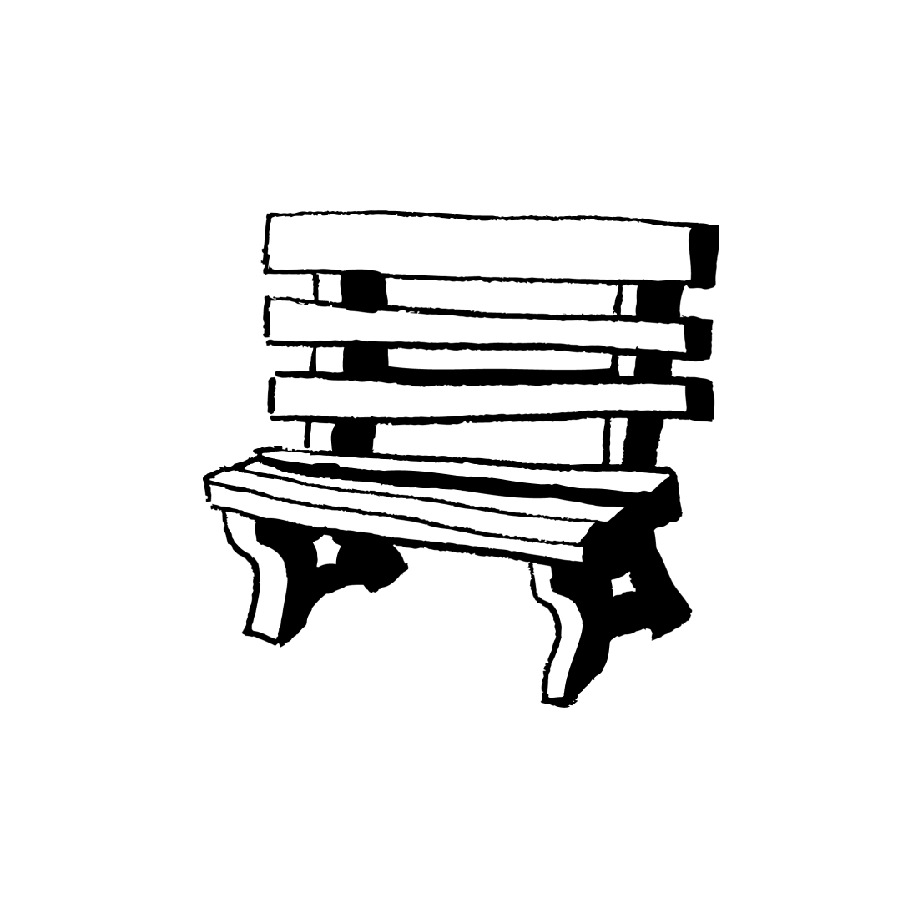
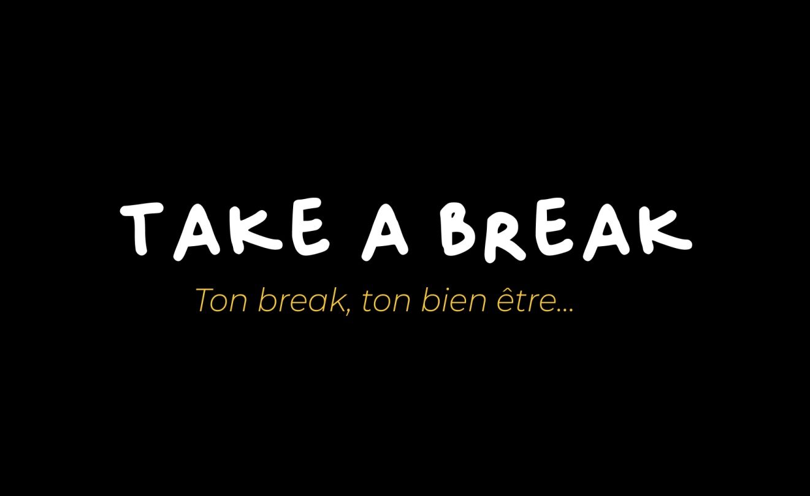
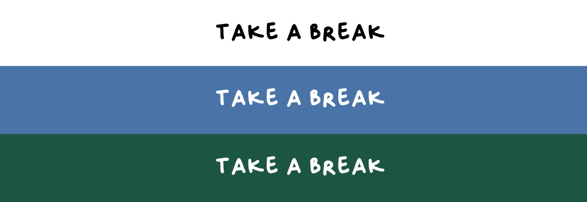
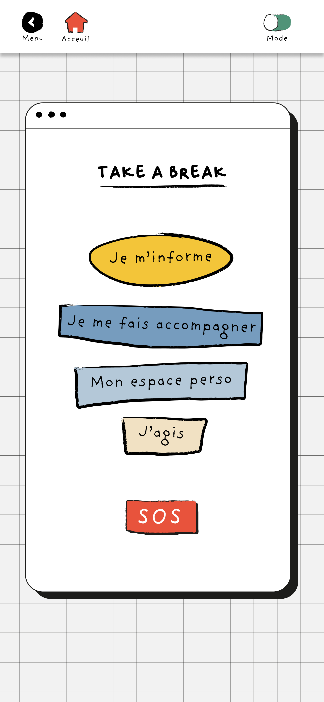
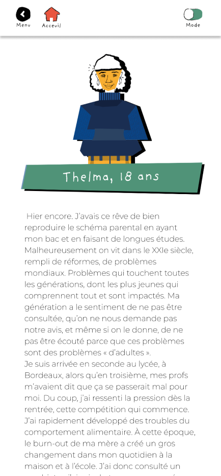
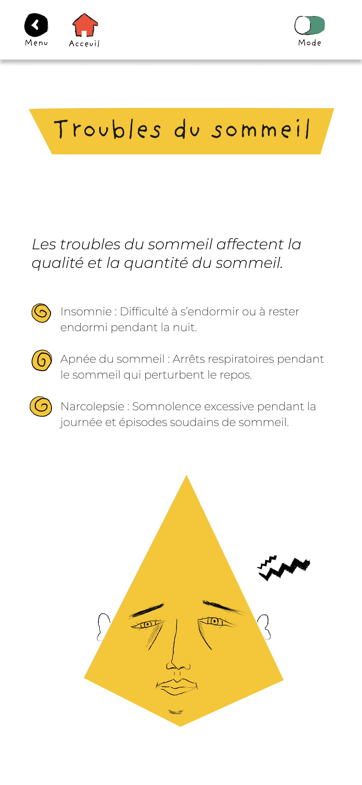
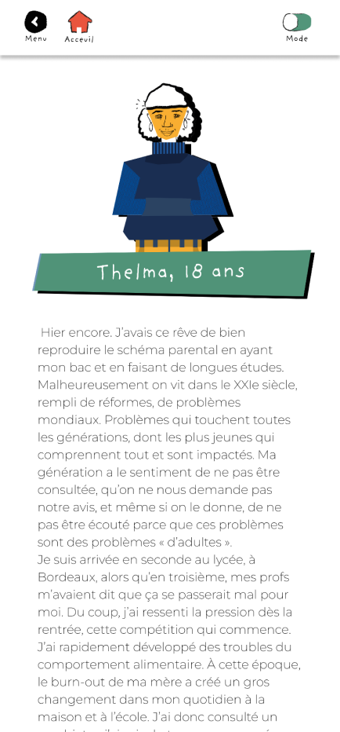
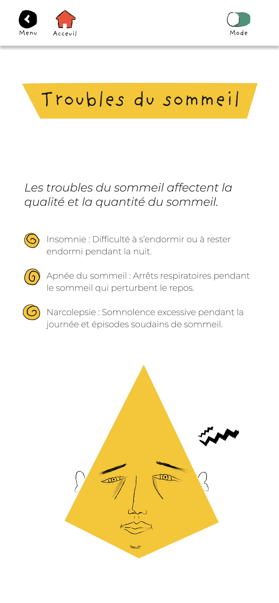
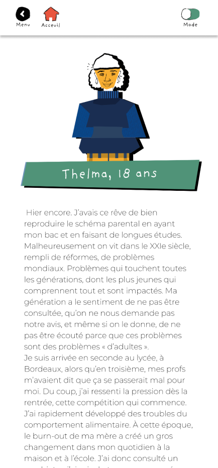
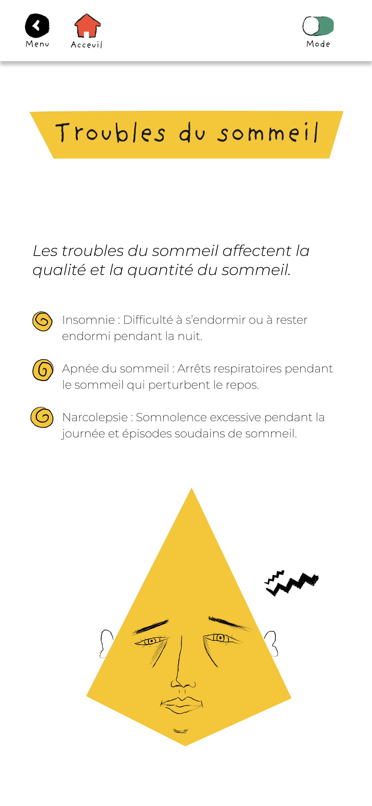

L’identité visuelle de Take a Break s’appuie sur un univers chaleureux et rassurant pour évoquer la bienveillance et le réconfort. Les formes arrondies et les illustrations dessinées à la main renforcent la proximité et l’accessibilité du projet. La palette de couleurs combine des teintes douces et lumineuses, symbolisant l’équilibre entre apaisement et énergie positive, en cohérence avec les deux modes de l’application. L’ensemble crée une atmosphère accueillante, inclusive et propice à la détente.
Quelques maquettes


 





Gamme colorée
#F1E1C3
#F3C539
#B3C8D8
#769CBE
#4A74A7